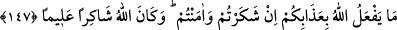

Eğer Allah ruhlarınızı mü’minlerin ruhları safında yaratarak size yardım ederse, artık
hiç bir kuvvet sizi kâfirlerin safına döndüremez. Eğer ruhlarınızı kâfirlerin ruhları
safında yaratarak sizi yüzüstü bırakırsa, sizi hangi kuvvet mü’minlerin safına
geçirebilir?
İç âlemini küfürden ve nifaktan arındıran kimse, esâsen mü’minlerin safında yer
almıştır. Fakat sonradan rûhunun kâfir ve münâfıkların ruhları hizâsına gelmesi
netîcesinde, aralarında belirli bir süre için marazlı bir dostluk meydana gelebilir.
Ancak bu geçici alâka, onun rûhaniyetinin saflığını tamâmen bozmaz ve kalbinin kapısı
gayb ilmine tamâmen kapanmaz. Ona, inâyet rüzgarından bir esinti ve Hakk’ın
letâifinden bir nefha ulaşırsa, hemen kalbi gaflet uykusundan uyanır.
Bâtılda direttikten sonra Hakk’a döner ve onun sırrına, aşağıları seçenin yardımcısı
olmayacağı nidâ edilir. Artık oradan çıkamaz.
“Ancak tevbe edip” yaptıklarına pişman olanlar ve işledikleri kötü amellerden
vazgeçenler, ifsâd ettikleri hayırlı güzel istidadlarını, “hallerini düzeltenler” nefsin
şehevî arzularını ve hayvânî hazları terkederek rûhâniyetini arındıranlar, kulluk görevini
îfâda kendisine yardım etmesini dileyerek “Allah’a”, Allah’ın ipine “sımsıkı sarılıp”
Allah’dan yalnız O’nu talep ederek “dinlerini yalnız O’nun için yapanlar başkadır.”
Kim yukarıda zikredilen bu şartları yerine getirirse “İşte bunlar mü’minlerle
berâberdirler”, yâni ruhu mü’minlerin ruhları safında yaratılmıştır, kâfirlerin ruhları
safında değil.
“Allah” tevbe eden “mü’minlere büyük mükâfât verecektir.” Allah onlara; “Kulum
bana bir karış yaklaştığı zaman ben ona bir arşın yaklaşırım. O bana bir arşın
yaklaşınca, ben ona bir kulaç yaklaşırım. O bana yürüyerek geldiği zaman ben ona
koşarak varırım.”[197] hükmünce yaklaşacaktır. İşte büyük mükafat buna denir. Allah
büyüktür, azamet sâhibidir. Bu kısım, “et-Te’vîlâtü’n-necmiyye”den alınmıştır.
Sa’dî (k.s.) der ki:
Tarikat âdâbına aykırıdır, evliyânın,
Allah’tan; Allah’tan başkasını istemesi
147- Eğer siz şükreder ve îman ederseniz, Allah size neden azap etsin! Allah
şükre karşılık veren ve her şeyi bilendir.
“Eğer siz şükreder ve îman ederseniz, Allah size neden azap etsin.” azâb ederek
sizden öfkesinin intikâmını mı alacak, yoksa hıncını mı çıkaracak? Veyâ size azap
ederek bir fayda mı elde edecek ya da bir zararı mı def edecek? Allah Teâlâ şükreden
mü’min kullarına hiç bir şekilde azap etmez. Çünkü yukarıda bahsi geçen hususlar Allah